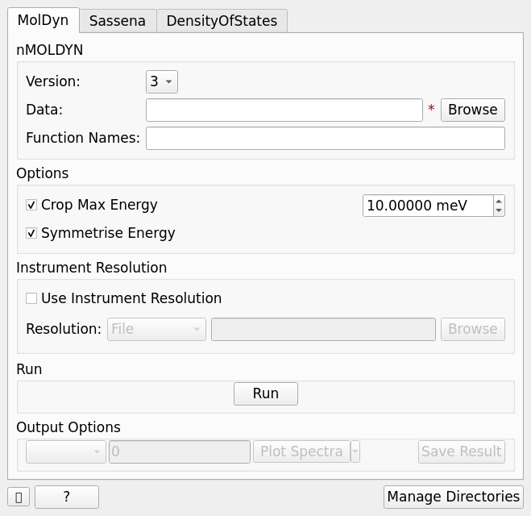
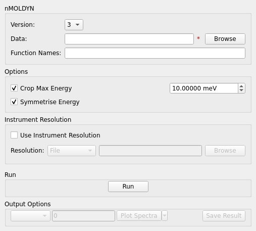
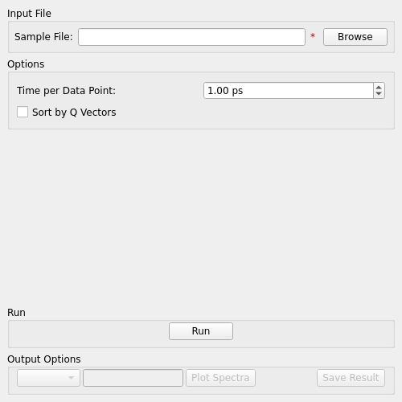
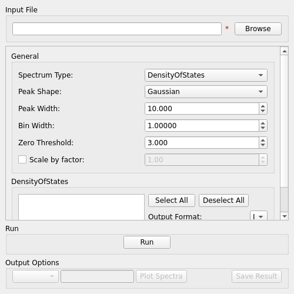
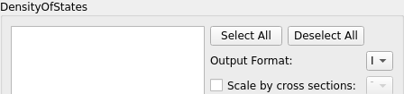
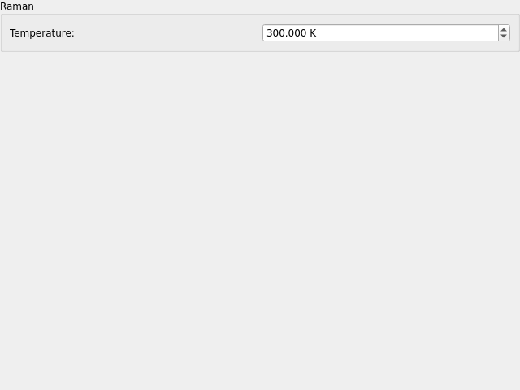

Indirect Simulation#
Overview#
This interface contains loaders for data created by various simulation software.
{kind=link}

MolDyn#
The MolDyn interface is used to import simulation data created using nMOLDYN (by using the MolDyn algorithm), tab operates on either .dat or .cdl files for nMOLDYN 3 or a directory containing the files extracted from the .tar archive created by nMOLDYN 4.
{kind=link}

Options#
- Version
The version of nMOLDYN the imported data was exported from.
- Data
The data file (.cdl or .dat) to load when using nMOLDYN 3 or the directory for the export taken from nMOLDYN 4.
- Function Names
A comma separated list of functions to load from a .cdl file.
- Crop Max Energy
Allows the maximum energy for loaded functions in energy to be cropped, this can be useful to remove the additional simulation data that is out of the energy range of an instrument.
- Symmetrise Energy
Symmetrises the functions in energy about x = 0.
- Instrument Resolution
Allows convolution with an instrument resolution file or workspace.
- Run
Runs the processing configured on the current tab.
- Plot Spectra
If enabled, it will plot the selected workspace indices in the selected output workspace.
- Open Slice Viewer
If enabled, it will open the slice viewer for the selected output workspace.
- Save Result
Saves the result in the default save directory.
Sassena#
The Sassena interface is used to load simulations from the Sassena software. This is done through the LoadSassena algorithm.
{kind=link}

Options#
- Sample File
The data file (.h5 or .hd5) to load.
- Time per Data Point
Specifies the time interval between each data point in the loaded data file.
- Sort by Q Vectors
If checked will sort the structure factors by momentum transfer in ascending order.
- Run
Runs the processing configured on the current tab.
- Plot Spectra
If enabled, it will plot the selected workspace indices in the selected output workspace.
- Save Result
Saves the result in the default save directory.
DensityOfStates#
The DensityOfStates interface is used to load vibrational spectra using the SimulatedDensityOfStates algorithm. It supports loading full and partial densities of states, raman and IR spectroscopy from CASTEP .phonon files.
Force constants data can also be loaded from CASTEP .castep_bin or Phonopy .yaml files.
(To include the relevant data in .castep_bin, set PHONON_WRITE_FORCE_CONSTANTS to True.
To include the required data in the phonopy.yaml file,
use the --include-all flag or INCLUDE_ALL = .TRUE. tag.)
A dense q-point mesh is automatically selected and phonon eigenvalues/eigenvectors are
calculated using the Euphonic library. This does not include Raman or IR intensities.
The Euphonic library is not currently included with Mantid and may need to be installed in order
to read these files.
In the Script Repository, /user/AdamJackson/install_euphonic.py can be used to install
Euphonic to an appropriate location.
{kind=link}

Options#
The following options are common to each spectrum type:
- Spectrum Type
Selects the type of spectrum to extract from the file.
- Peak Shape
Selects the shape of peaks to fit over the intensities extracted from the file.
- Peak Width
Sets the FWHM to which the fitted peaks should be broadened.
- Bin Width
Sets the histogram resolution for binning.
- Zero Threshold
Frequencies below this threshold will be ignored.
- Scale by Factor
Optionally apply scaling by a given factor to the output spectra.
DensityOfStates#
When loading a partial density of states (from a .phonon file) the following additional options are available (note that they will be disabled when using a .castep file):
{kind=link}

- Ion List
Lists all the ions in a given file, individual ions can then be selected to be included in a partial density of states.
- (De)Select All
Provides a quick method of selecting or deselecting all ions in the current file.
- Sum Ion Contributions
If selected, the contributions of each selected ion will be summed into a single Matrix Workspace, otherwise a Workspace Group with a Matrix Workspace for each ion will be produced.
- Scale by cross sections
If selected the contribution for each ion will be multiplied by the given scattering cross section.
Raman#
When loading a raman spectroscopy spectra the following additional options are available.
{kind=link}

- Temperature
Temperature to use in Kelvin.
Other Options#
- Run
Runs the processing configured on the current tab.
- Plot Spectra
If enabled, it will plot the selected workspace indices in the selected output workspace.
- Save Result
Saves the result in the default save directory.
Categories: Interfaces | Indirect